AI/ML Researcher —
I build and stabilize research-grade ML systems — from a BART-based summarization pipeline improving ROUGE-1 to 42.10, to an OSINT dashboard correlating 400+ IPs and domains across 15 APIs. Currently interning at DRDO's Young Scientist Lab.

I'm an AI/ML researcher and final-year B.Tech student in Artificial Intelligence and Machine Learning at Garden City University, Bangalore, currently interning at DRDO's Young Scientist Lab on agentic text summarization.
Most of my work sits at the intersection of NLP research and shipping working systems: fixing gradient instability in contrastive ranking objectives one week, wiring a Flask + PostgreSQL OSINT dashboard the next. I care about pipelines that don't fall over — crash-safe checkpoints, mixed-precision training that fits constrained GPUs, and results that are actually reproducible.
The stack I reach for when a research idea needs to become a working, reproducible system.
A mix of research on summarization/OSINT and applied computer-vision systems.
Coursework: Data Structures, Algorithms, Machine Learning, Deep Learning, Computer Vision, Database Management.
Available for full-time roles starting 2026 — reach out directly or use the form.